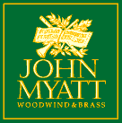
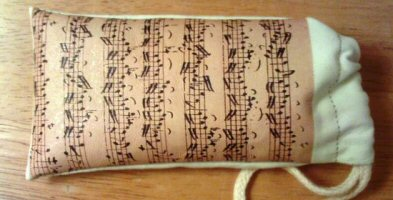

Northampton Symphony Orchestra
Links to other websites
This page contains links to other sites on the Internet you may find useful. If you have a suggestion for a website you think should appear here, please contact us. All links will open in a new browser window or tab. Northampton Symphony Orchestra is not responsible for the content of any websites linked from this page.
|  | ||
| Mobile phone/glasses cases for sale | ||
 |
||
 |
||